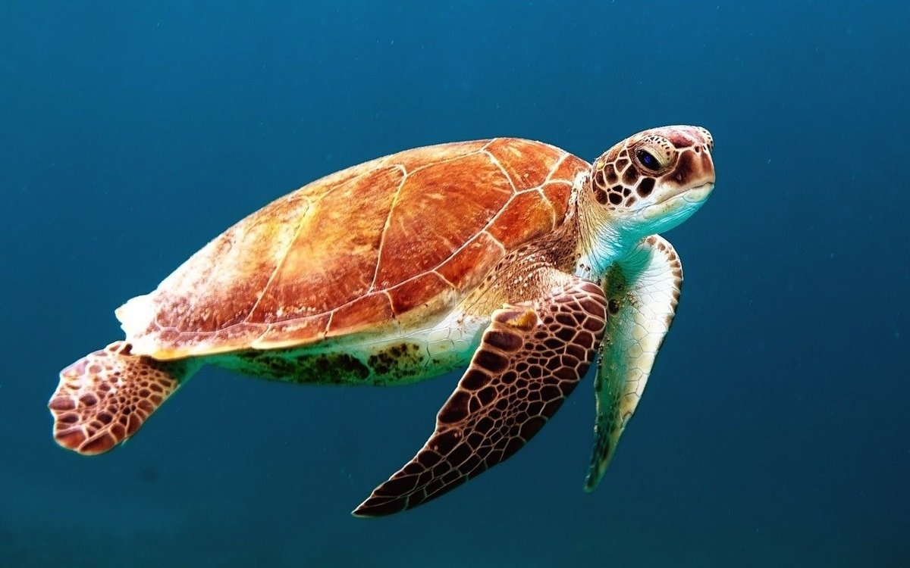

- Green turtles are the most common species found in Sri Lanka.
- They are named for the green color of their fat and cartilage.
- Adult green turtles can weigh between 200 and 500 pounds (90-227 kg) and reach lengths of up to 4 feet (120 cm).
- They primarily feed on seagrasses and algae.
- Green turtles nest throughout the year in Sri Lanka, with peak nesting season occurring from November to February.

- Loggerhead turtles are less common in Sri Lanka compared to green turtles.
- They have a reddish-brown carapace and a large head with powerful jaws.
- Adult loggerheads can weigh between 200 and 400 pounds (90-181 kg) and reach lengths of around 3 feet (90 cm).
- They primarily feed on crustaceans, mollusks, and jellyfish.
- Loggerheads nest in Sri Lanka, with nesting season occurring from January to March.



- Olive ridley turtles are the smallest and most abundant sea turtle species in Sri Lanka.
- They have a heart-shaped carapace and are named for their olive-green color.
- Adult olive ridleys weigh between 75 and 100 pounds (34-45 kg) and reach lengths of around 2.5 feet (75 cm).
- They have a varied diet, feeding on crustaceans, fish, and jellyfish.
- Olive ridleys nest in large numbers in Sri Lanka, with nesting season occurring from February to July.

- Hawksbill turtles are less common in Sri Lanka and are critically endangered.
- They have a distinctive pointed beak and a beautiful shell with overlapping scutes.
- Adult hawksbills can weigh between 100 and 150 pounds (45-68 kg) and reach lengths of around 2.5 feet (75 cm).
- They have a specialized diet, feeding mainly on sponges and other invertebrates.
- Hawksbills nest in Sri Lanka, with nesting season occurring from November to February.
- Leatherback turtles are the largest and most unique sea turtle species.
- They have a leathery carapace instead of a hard shell and can grow to massive sizes.
- Adult leatherbacks can weigh between 600 and 1,500 pounds (272-680 kg) and reach lengths of up to 7 feet (213 cm).
- They primarily feed on jellyfish.
- Leatherbacks occasionally nest in Sri Lanka, but their nesting patterns are unpredictable.